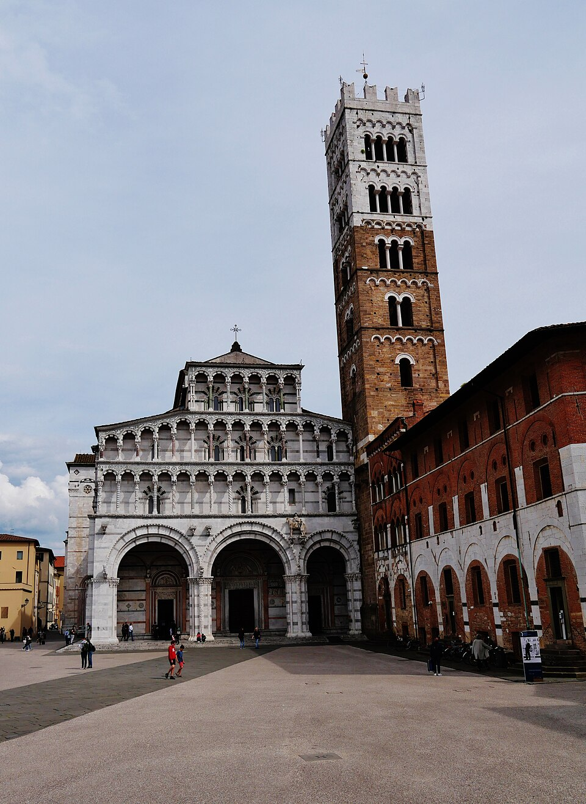
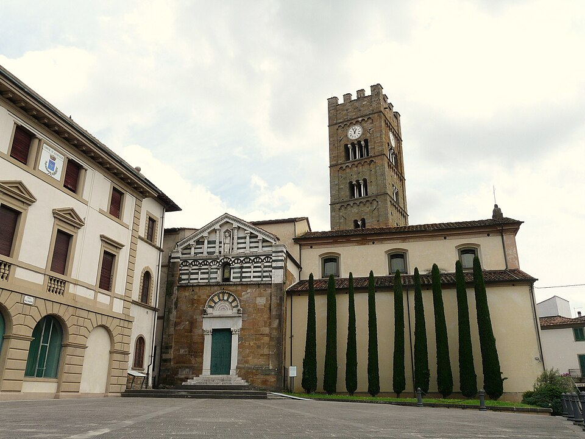
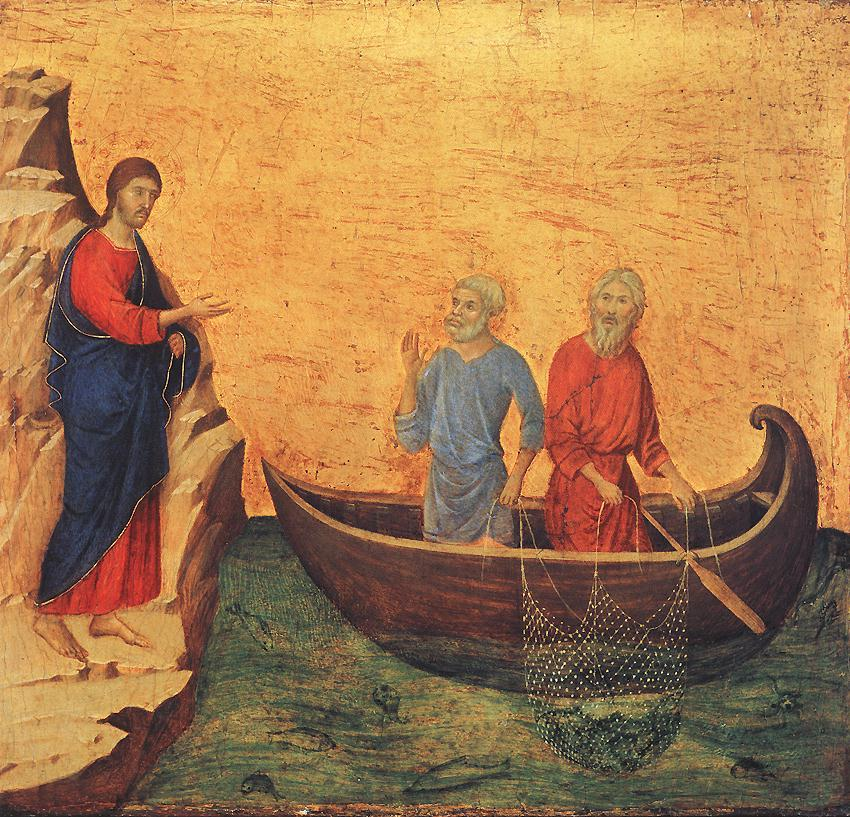

Terrain: the flat Valdarno plain, asphalt and stretches of strada bianca (white gravel road), then the climb onto the hill of San Miniato. Distance and ascent are measured from the day's GPS track.7
Obedience, before it is a matter of the will, is a matter of the ear. To obey is first to hear — to lean the whole self toward a voice and let it move you. Today the pilgrimage begins not with a map but with a summons.
As he was walking by the Sea of Galilee, he saw two brothers, Simon who is called Peter, and his brother Andrew, casting a net into the sea; they were fishermen. He said to them, “Come after me, and I will make you fishers of men.” At once they left their nets and followed him. He walked along from there and saw two other brothers, James, the son of Zebedee, and his brother John. They were in a boat, with their father Zebedee, mending their nets. He called them, and immediately they left their boat and their father and followed him.
Matthew 4:18–22 · New American Bible, Revised Edition1
You leave Lucca by its walls, and you leave behind, in the cathedral of San Martino, the Volto Santo — the Holy Face, a robed wooden Christ that for centuries drew pilgrims off the road and into the dark of the nave.5 To ride out this morning is already to practise a small renunciation: you turn from the sight that others crossed Europe to see, and you point the wheel south.
The men in the Gospel are working when they are called. Peter and Andrew have their hands in the net; James and John are mending theirs beside their father. Nobody is waiting to be summoned. The word comes into the middle of an ordinary morning, and the response is startling in its speed — at once, immediately. They do not finish the row of stitches. They do not haul the catch. The nets, the boat, even the father, are left where they lie.
This is the obedience the day asks of you, and it is worth being honest about its cost. To follow is not only to go somewhere; it is to leave something unfinished. The road to Rome is flat here, deceptively easy, running out across the Valdarno before the land begins to rise toward San Miniato. It is a good day to notice how much of the self is still back at the boat, still mending, still counting what was in the net.
Augustine names the engine underneath all of it: the heart that God has made for himself and that will not settle until it settles in him. The pilgrim does not invent this restlessness — he only, at last, stops resisting it and lets it carry him down the road. The disciples' speed is not recklessness. It is the recognition of a homesickness they had felt all along and never named. Today you begin to name yours.
What net am I still mending — and would I leave it, at a single word?
Today's route, Lucca to San Miniato. Map © CyclOSM / OpenStreetMap. Full elevation profile & all stages →
Lucca is the oldest kind of waypoint. When Archbishop Sigeric of Canterbury rode home from Rome in the year 990, the cleric travelling with him wrote down the stages of the return; in that list — the document from which the very idea of the Via Francigena is reconstructed — Lucca appears as Luca, the twenty-fifth resting place, submansio XXV.6 You are setting out along a line that has been a road for well over a thousand years.
The morning's country is the plain of the lower Arno — and, older than its fields, the memory of a marsh. Market towns, drainage canals, poplar lines, the occasional strada bianca running straight between them: this flat, watery ground was for centuries a wetland that swallowed roads and travellers alike, and the taming of it was the life's work of the men whose hospice still stands at the day's midpoint. It is not dramatic country, and that is its gift on a first day — the legs learn the loaded bike on ground that forgives. Carry water; there is little shade by noon.

Photo: Zairon (CC BY 4.0) · Wikimedia CommonsAt roughly the eighteenth kilometre the road brings you into Altopascio, and you should not ride through it. This small town held one of the most important pilgrim stations on the whole Via Francigena, and its story is written into the day's theme. Its Spedale — the pilgrim hospice — is first recorded in 1084.12 Around it grew the Order of Saint James of Altopascio, the Knights of the Tau, founded by the Countess Matilda of Canossa about 1070–1080 and remembered as perhaps the earliest order to unite in one body the care of pilgrims, the keeping of a hospital, and a military wing.13 For close to seven centuries, until 1780, the Domus Hospitalis Sancti Jacobi fed, sheltered, and doctored the people of the road.13

Photo: Davide Papalini (CC BY-SA 3.0) · Wikimedia CommonsBeyond Altopascio the plain runs on toward Fucecchio and the Arno; then a single hill detaches itself from the flat, a tower on its crown, and the last kilometres of the day are the climb.
At the top waits San Miniato — San Miniato al Tedesco, “of the German.” The epithet is a fossil of empire. From 1116 the imperial vicar Rabodo made the town the seat of imperial government in Tuscany, displacing Florence; the vicars who ruled the province from this hill were mostly German, and the name stuck.9 Under the Emperor Frederick II the walls were extended and the Rocca built, its tower standing at the summit, 192 metres up, over the whole Valdarno.9 It is a fitting place to end a day whose Gospel is about leaving one lord to follow another: a town raised to hold earthly power, seen at evening by two people who have ridden all day toward a different kingdom.
The LORD said to Abram: Go forth from your land, your relatives, and from your father's house to a land that I will show you… Abram went as the LORD directed him, and Lot went with him. Abram was seventy-five years old when he left Haran… When they came to the land of Canaan, Abram passed through the land as far as the sacred place at Shechem… So Abram built an altar there to the LORD who had appeared to him… Then Abram journeyed on by stages to the Negeb.
Genesis 12:1–9, abridged · New American Bible, Revised Edition2
Hear it slowly. An old man in Haran, settled, with a household and a name, is told to unsettle himself: Go forth. The command strips away, one clause at a time, everything that anchors a life — your land, your kin, your father's house — and offers in exchange only a direction and a promise: to a land that I will show you. Not a land he is shown now. A land he will be shown, later, on the way. The destination is withheld so that the going itself becomes an act of trust.
He is seventy-five. This is not a young man's adventure; it is a whole life re-hinged at an age when most men have earned the right to sit still. And he goes — the text wastes no words on his hesitation — and he does not go alone. Lot went with him. The first pilgrimage in Scripture is not a solitude. It is a departure shared, an older man and a younger setting out under the same promise, dividing the road and the risk between them.
Notice what Abram does when he stops. He builds an altar. Again, later, he builds another. He moves “by stages,” and each stage is marked not by how far he rode but by a place where he turned to God. The medieval road you are on kept the same grammar: it was measured in mansiones, resting places, and Sigeric counted them one by one from Rome. A pilgrimage is a life reduced to its honest shape — a series of stages, each one ending, if you let it, at an altar. The tiredness in your legs tonight is not an interruption of the journey. It is the journey. The promise is kept in the going, not at the end of it.

Listen carefully, my child, to your master's precepts, and incline the ear of your heart. Receive willingly and carry out effectively your loving father's advice, that by the labor of obedience you may return to Him from whom you had departed by the sloth of disobedience.
Rule of St Benedict, Prologue · trans. Leonard J. Doyle OSB11
Benedict opens his whole Rule with the ear. Before a single rule of the house, before the hours and the meals and the work, there is a posture: incline the ear of your heart. This is the same word the morning gave you — obedience, ob-audire, the listening lean. Benedict simply tells you where it leads. The labour of obedience, he says, is how “you may return to Him from whom you had departed.”
That single verb, return, reframes the entire journey. You did not think, this morning, that you were going back. You thought you were setting out — new road, new country, the front wheel pointed at a city you have never reached this way. Benedict says: no. Every step toward God is a step home. The pilgrimage to Rome is not an expedition into the strange but a long act of homecoming, undertaken by hearts that, as Augustine said at dawn, were made for God and are restless everywhere else. The road only makes visible a return that was always the true shape of the soul.
And you end the day, fittingly, on the hill of the emperors. San Miniato was built to project a power that measured itself in walls and towers and vicars — the earthly city, in Augustine's old distinction, the city founded on the love of self.9 Frederick's tower still stands over the plain you crossed. It is worth sitting under it tonight and letting the two kinds of greatness stand side by side: the greatness that fortifies a hilltop, and the greatness of two tired people who owned almost nothing today but a direction. Benedict was not naïve about the first kind — his monks kept walls too. But he ordered everything to the second: the return, the listening, the labour that carries a restless heart, by stages, home.
Every quotation is reproduced from the edition named; historical statements are drawn from the references below. Where information (opening hours, Mass times, pilgrim-stamp points) could not be verified, it is omitted or marked for on-site confirmation rather than stated.